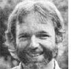

MEDICAL SELF-CARE
This issue's column was guest--written--for Dr. Tom Ferguson-by a frequent contributor to Medical Self-Care.
If someone promised to pay you $500 to stay healthy next year, do you think you might try a little harder than you do now to promote your own well-being?
Well, that's certainly been the case with several thousand people across the country whose employers have adopted "stay-well health insurance": an incentive program that pays cold cash (or other benefits) to workers who remain in good health and out of the doctor's office.
The concept was born in 1978 in northern California's Mendocino County, when Assistant School Superintendent Ed Nickerman was asked to find ways to help the school system cut costs. His investigation soon uncovered a particularly burdensome expense for both the district and its employees (including himself): health insurance.
"I have a large family," says Nickerman, "and no matter what I did, our health insurance premiums kept going up. Yet the only times we benefited from those payments were when one of us got sick. There was never any reward for staying well."
Ed reasoned that people would adopt more healthful lifestyles if they were offered some kind of financial incentive . . . and he reckoned further that, as their health improved as a result, they would use fewer medical services, which in turn would ultimately lower the school's (and its employees') insurance premiums.
At that time, Mendocino's schools carried a zero-deductible health insurance plan. Nickerman calculated, however, that if the district converted to a -$500-deductible plan, and set aside $500 per employee in a separate account to be used for the worker's medical expenses under $500 (anything over that amount, of course, would be paid by the insurer), the system could still provide total health coverage . . . but for a lower cost.
DOUBLE INCENTIVE
The "reward" part of Nickerman's plan was twofold: First, the district would earn interest on the money banked to cover each worker's first $500 in medical costs. And second, each employee would be credited with any of the money that he or she didn't use . . . and the amount accumulated over the years could be redeemed when that person retired or left the district.
If, for example, an employee's medical expenses totaled $100 for a given year, the district would pay that sum and credit the person with a stay-well bonus of $400. If the employee spent an average of just $100 a year in medical expenses for 20 years, he or she would collect a stay-well retirement bonus of $8,000!
Although his proposal was turned down by six other carriers, Nickerman managed to convince Blue Shield to underwrite the novel plan . . . and today, all parties involved are pleased with the results.
After just three years of the program, the district has saved $250,000 in insurance premiums . . . has stabilized its insurance costs . . . and has earned more than $20,000 in interest on the funds set aside to cover the deductibles. In addition, many employees have begun to accumulate substantial retirement nest eggs.
A NEW SCHOOL BUS . . . AND MORE
One of the reasons behind the stay-well plan's success is that only a fraction of the subscribers actually use $500 worth of medical services each year. In fact, during the initial two years of the program, 25% of Mendocino school employees incurred no medical expenses at all! The district had banked about $90,000 to fund stay-well's first year, and after covering all employee health costs, it had $37,000 left. The following year, the surplus amounted to $36,000. And most important, those dollars accrue considerable interest for the school system . . . it's estimated, in fact, that the district can expect an interest income of more than $500,000 over the next ten years. Already, Mendocino County can boast of a shiny new school bus purchased with stay well earnings, and can confidently look forward to meeting other such needs with the "free" money.
Meanwhile, many school employees can anticipate fuller, and probably longer, lives . . . because the stay-well plan has motivated them to take more interest in maintaining their health. Soon after the program's introduction, district employees converted an empty storage area into an exercise room and equipped it themselves. Many workers have quit smoking, improved their diets, and started exercising regularly.
In addition, the plan has improved the relationship between the school district and its insurance company . . . the two now work together to promote the concept of self-care, and both reap the benefits of lower costs as a result. District and Blue Shield officials conduct an ongoing educational campaign for school employees. And each worker gets a free annual physical checkup, which saves everyone money in the long run by detecting health problems in the early, most treatable, stages.
VARIATIONS ON THE STAY-WELL THEME
Not all stay-well programs work precisely like the Mendocino plan. In southern California's Capistrano school system, for ex ample, each employee receives the unspent portion of his or her $500 deductible fund as a year-end bonus. The Bank of America recently launched a pilot program in which employees do pay a portion of their insurance premiums, but if they incur medical expenses of less than $100 each year (or under $250 per family), they become eligible for free coverage the following year. And in Louisiana, the state branch of the American Medical Association has a plan that invests members' stay-well bonuses in individual retirement accounts.
AN IDEA WHOSE TIME IS OVERDUE
Twenty years ago, the cost of being hospitalized in California was about $42 a day . . . today, it averages from $400 to $800 per diem. In 1960, the typical hospital stay cost $305 . . . today it amounts to $2,475, an increase of 800%. During the same period, the fee for a visit to the doctor's office increased 230% ... prescription drug prices rose 89% . . . and health insurance premiums went up a whopping 410%.
Significantly, Blue Shield officials blame the increases not only on inflation and the high cost of ever-more-sophisticated technologies, but also on simple over utilization of health-care services. They estimate that 50% to 70% of all visits to physicians are unnecessary! Colds, flu, upset stomachs, and a myriad of other common complaints could be treated more effectively, and far less expensively, at home. But despite attempts to encourage more appropriate use of health services, there seemed to be no way to stop the trend toward needless doctor visits, soaring health-care costs, and rising insurance premiums . . . until the stay well concept came along.
But, of course, not everyone has embraced the idea with open arms. Many employers remain unconvinced that such a program really can reduce their annual costs and some insurance companies fear that stay-well plans-since they raise deductibles and reduce direct premiums-will cut into their incomes. But Blue Shield's experience has proved otherwise: Employers interested in the idea have brought new business to the company. And, according to Blue Shield's Gus Barlas, the firm is confident that stay-well plans will ultimately help control increasing pay-out costs. "In the long run," says Barlas, "everyone is going to save money with healthier employees."
EDITOR'S NOTE: Medical Self-Care, Dr. Tom Ferguson's quarterly journal, is available for $15 per year from Medical Self Care, Dept. TMEN, P.O. Box 717, Inverness, California 94937. A sample issue costs $4.00. Dr. Ferguson's book, also titled Med ical Self-Care, can be ordered for $10 post - paid from the same address.
|
 |
|
|